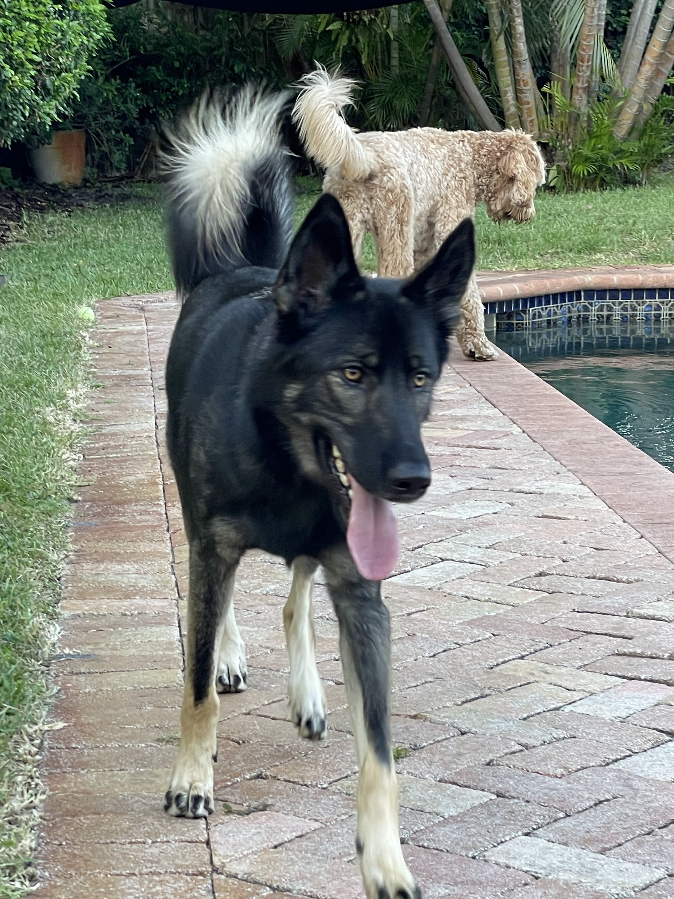
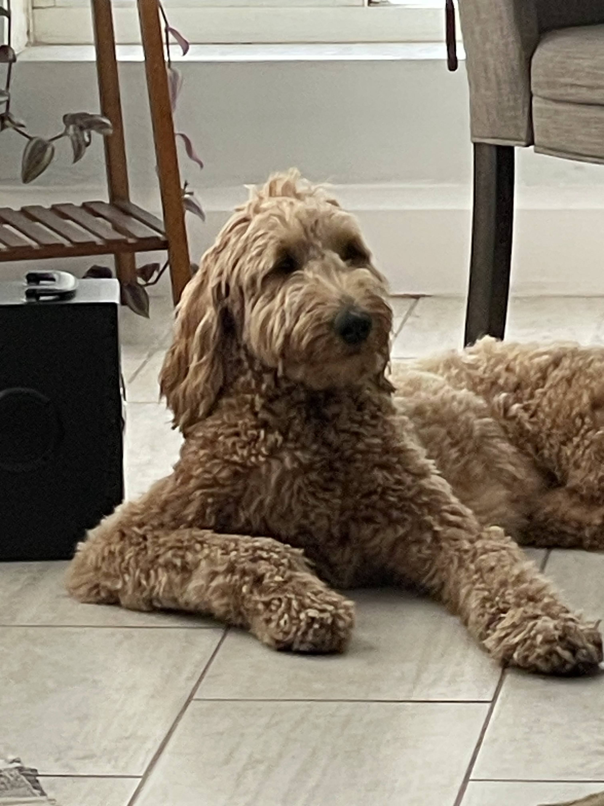
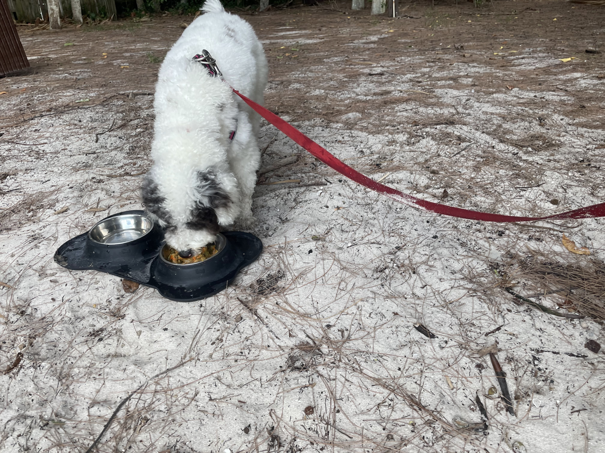
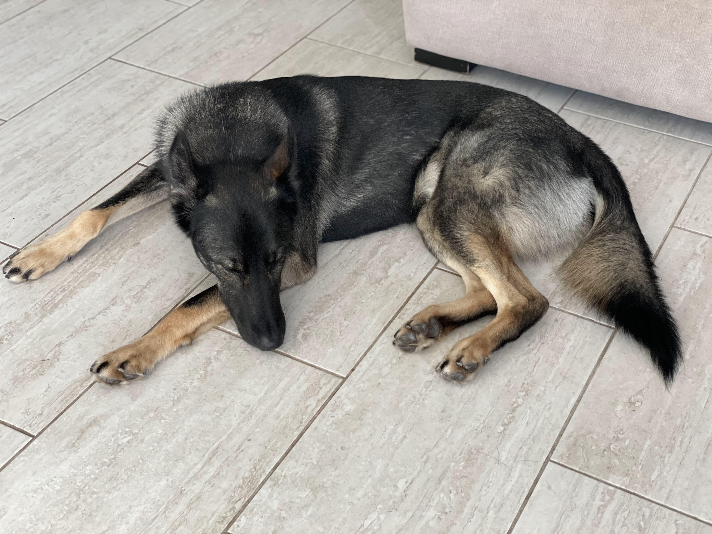
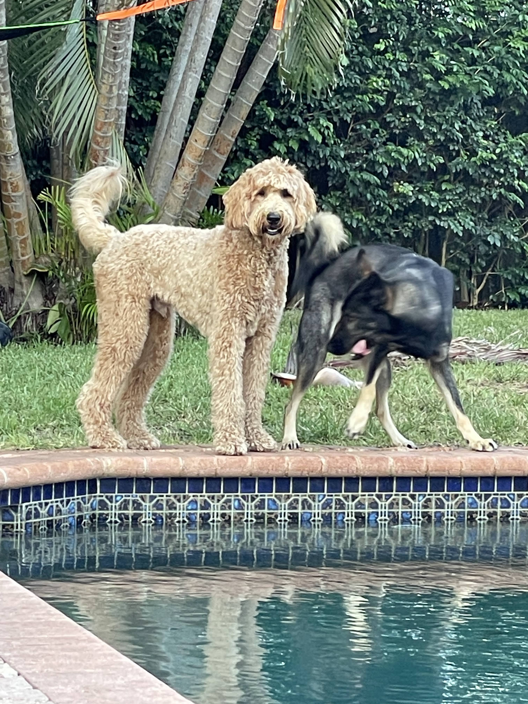
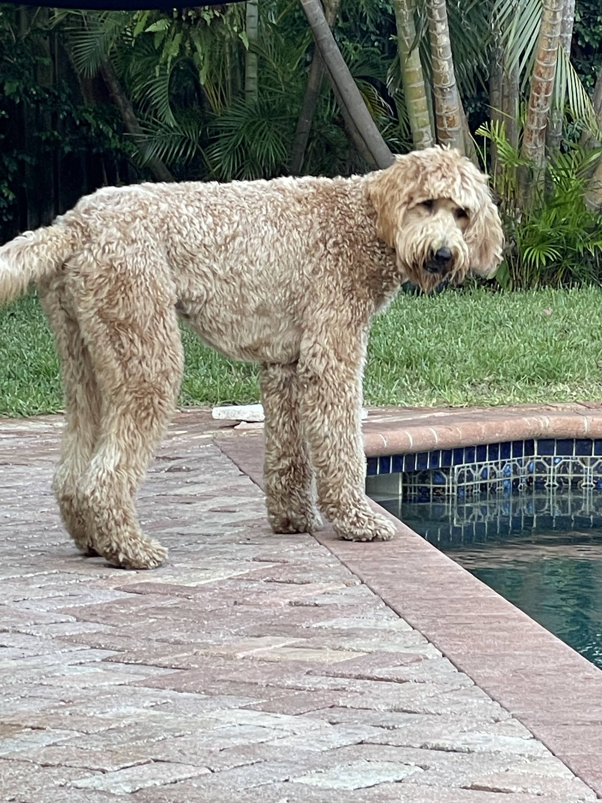
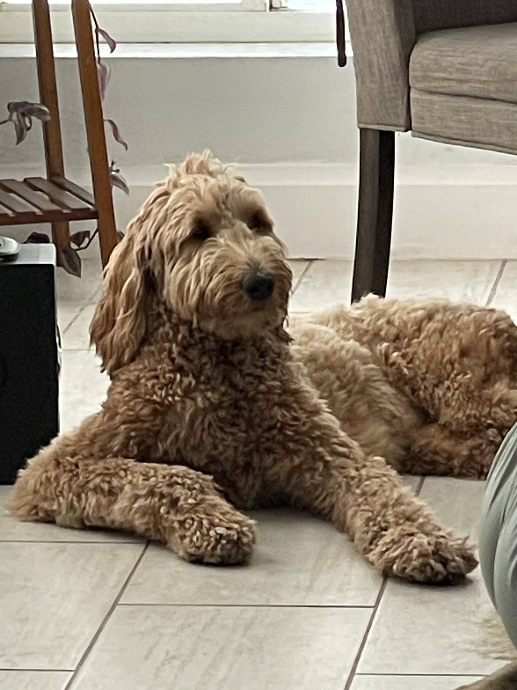

Meet Bosco, Rylo & Zola

Belgian Malinois
A loyal and athletic companion with boundless energy. Bosco loves a good game of fetch in the backyard and is always ready for an adventure.

Goldendoodle
A fluffy, lovable goofball who never meets a stranger. Rylo's favorite things include splashing around in the water and chasing after tennis balls.

Aussiedoodle
Smart, playful, and full of personality. Zola is a natural swimmer who also loves a spirited round of fetch in the backyard.




Bosco, Rylo, and Zola are three best friends who love spending their days swimming and playing fetch in the backyard. Whether it's splashing in the water or racing after a ball, these three are always up for a good time.